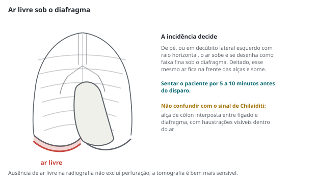

Trauma de tórax, abdome e pelve · 75 min · ATLS 2025, WSES 2017 a 2026 · monografia
Trauma abdominal fechado e penetrante segundo o ATLS 11ª edição (2025), as diretrizes WSES de baço, fígado, rim, duodeno e pâncreas, pelve, abdome aberto e cólon e reto, a escala AAST e a WSACS 2013: imagem, indicação de laparotomia, manejo não operatório, tática por órgão, retroperitônio e controle de danos.
A prova mistura três camadas: a sequência do ATLS, a decisão por órgão da World Society of Emergency Surgery (WSES) e o vocabulário da escala da American Association for the Surgery of Trauma (AAST). Nenhuma conduta por órgão vale antes de controlar a hemorragia exsanguinante.
A 11ª edição do ATLS (American College of Surgeons, 2025) foi reescrita por inteiro. O ABCDE passou a xABCDE: o "x" é o controle da hemorragia externa exsanguinante antes da via aérea, com torniquete, tamponamento da ferida e cinta pélvica. A edição consolida a ressuscitação de controle de danos: hipotensão permissiva até controlar o sangramento, cristaloide só como ponte até chegar sangue, protocolo de transfusão maciça precoce, reposição 1:1:1 ou sangue total, ácido tranexâmico nas primeiras 3 horas (1 g em bólus e 1 g em infusão), e correção da hemodinâmica antes da intubação em sequência rápida. Um consenso WSES de 2025 associou priorizar a via aérea antes da circulação, no doente exsanguinando, a mais mortes.
No trauma fechado, a compressão esmaga pâncreas e duodeno contra a coluna e estoura a alça cheia; a desaceleração cisalha estruturas com pontos fixos (pedículo renal, mesentério, ligamento de Treitz); o impacto direto fratura costelas baixas e lacera baço e fígado. Baço e fígado são os mais lesados; delgado e mesentério, os mais esquecidos. No penetrante, a faca lesa o que toca, e muitas facadas anteriores nem violam o peritônio; o projétil transfere energia ao redor do trajeto, desvia e fragmenta, e por isso costuma exigir laparotomia quando entra na cavidade.
O sinal do cinto de segurança é a pista mais valiosa do trauma fechado. Numa metanálise de 2023 (nove estudos, 3.050 doentes), associou-se a mais lesão intra-abdominal (razão de chances de 3,6) e a mais intervenção cirúrgica (7,3); na criança, o excesso de risco é quase todo de víscera oca e mesentério. O cinto subabdominal com flexão violenta do tronco produz a tríade: equimose do cinto, lesão de víscera oca ou mesentério e fratura de Chance (flexão e distração da coluna toracolombar com fulcro anterior ao corpo vertebral). Achou uma, procure as outras duas.
Peritonite, evisceração e distensão com choque decidem a laparotomia sem exame complementar. Mas o exame falha em quem mais precisa dele: rebaixamento de consciência, álcool, sedação, lesão medular, fraturas de costela e de bacia que mascaram ou imitam a dor. O retroperitônio dá poucos sinais por horas a dias. A inspeção inclui dorso, axilas, períneo e nádegas, com rolamento em bloco; a pelve não se "balança" para testar estabilidade. Na fratura pélvica com hematoma perineal, toque retal e exame do períneo são obrigatórios (WSES pelve, 1B).
O exame seriado, pelo mesmo cirurgião, com hemoglobina a cada 6 horas nas primeiras 24 horas (WSES fígado), é o instrumento do manejo não operatório. Sem examinador confiável ou sem centro com tomografia, centro cirúrgico e sangue disponíveis o tempo todo, manejo não operatório de lesão moderada ou grave deixa de ser opção.
O eFAST é adjunto da avaliação primária e procura líquido livre, não lesão de órgão (WSES fígado e WSES duodeno e pâncreas, 1A). Os limites:
Seu valor está no instável: eFAST abdominal positivo e choque sem outra causa levam ao centro cirúrgico. No estável, positivo ou negativo, o passo seguinte é a tomografia.
O lavado peritoneal diagnóstico ficou para três cenários (WSES fígado): ambiente sem tomografia nem ultrassom; doente em choque em quem o ultrassom não é possível (enfisema subcutâneo maciço); e estável com líquido livre sem lesão sólida, quando a dúvida é víscera oca. Tem sensibilidade acima de 99% para hemoperitônio, mas não é específico, não avalia o retroperitônio, deixa passar perfuração intestinal em até 10% e tem complicações de 0,8% a 2,3%. Sangue franco ou conteúdo entérico na aspiração dispensa o resto do exame.
A tomografia com contraste intravenoso é o padrão-ouro no estável (WSES fígado, 1A), com sensibilidade e especificidade de 96% a 100% para órgão sólido. As condições caem em prova: tomógrafo imediatamente disponível e doente estável ou estabilizado; o respondedor transitório vai só em circunstâncias especiais, acompanhado pela equipe de trauma. O instável não vai.
A fase tardia separa sangramento ativo (o contraste cresce) de lesão vascular contida (pseudoaneurisma, fístula arteriovenosa), distinção que virou critério de grau na AAST 2018; só cerca de 47% dos achados vasculares se confirmam na angiografia. Contraste oral não melhora a detecção de lesão duodenopancreática (2A). Hematúria com hipotensão ou desaceleração de alta energia pedem fase urográfica (WSES rim, 2B); o penetrante de flanco estável, sempre (1B).
Tomografia negativa não encerra a investigação. Até 40% das lesões pancreáticas passam na tomografia das primeiras 12 horas; repetir em 12 a 24 horas se a suspeita persiste (2A) elevou a sensibilidade para perfuração intestinal de 30% para 82%. Amilase e lipase seriadas a partir de 3 a 6 horas apoiam a suspeita (1B).
A escala AAST é anatômica (tomografia, cirurgia ou necropsia); lesões múltiplas no mesmo órgão sobem um grau até o III. A revisão de 2018 de baço, fígado e rim incluiu lesão vascular e sangramento ativo no grau, e o fígado perdeu o grau VI.
| Grau | Baço (AAST 2018) | Fígado (AAST 2018) |
|---|---|---|
| I | Subcapsular < 10% da superfície; laceração < 1 cm | Subcapsular < 10%; laceração < 1 cm |
| II | Subcapsular 10% a 50%; intraparenquimatoso < 5 cm; laceração 1 a 3 cm | Subcapsular 10% a 50%; intraparenquimatoso < 10 cm; laceração 1 a 3 cm |
| III | Subcapsular > 50%; intraparenquimatoso ≥ 5 cm; laceração > 3 cm; hematoma roto | Subcapsular > 50%; intraparenquimatoso > 10 cm; laceração > 3 cm; sangramento ativo contido no parênquima |
| IV | Lesão vascular ou sangramento contido na cápsula; desvascularização > 25% | Ruptura de 25% a 75% de um lobo; sangramento ativo para o peritônio |
| V | Baço pulverizado; sangramento ativo para além do baço | Ruptura > 75% de um lobo; lesão venosa justa-hepática (cava retro-hepática, veias hepáticas centrais) |
Duodeno: I, hematoma de uma porção ou laceração parcial; II, hematoma de mais de uma porção ou ruptura < 50% da circunferência; III, ruptura de 50% a 75% de D2 ou de 50% a 100% de D1, D3 e D4; IV, ruptura > 75% de D2 envolvendo ampola ou colédoco distal; V, destruição do complexo duodenopancreático ou desvascularização. Pâncreas: I e II, contusão ou laceração sem lesão ductal; III, transecção distal ou lesão com lesão do ducto; IV, transecção proximal ou lesão da ampola; V, destruição da cabeça. Proximal e distal se referem ao eixo da veia mesentérica superior e porta.
A WSES somou a anatomia à hemodinâmica, com a mesma lógica para baço, fígado, rim e complexo duodenopancreático. Instabilidade, nessas diretrizes, é sistólica abaixo de 90 mmHg com sinais de choque, ou acima de 90 à custa de bólus, transfusão ou vasopressor, ou excesso de base abaixo de −5 mmol/L, ou índice de choque acima de 1, ou necessidade de 4 a 6 concentrados em 24 horas. O respondedor transitório melhora com a reposição e volta a piorar.
| WSES | Baço e fígado | Rim | Duodeno e pâncreas |
|---|---|---|---|
| I (menor) | AAST I e II, estável | AAST I e II, estável | Pâncreas I e II; duodeno I |
| II (moderada) | AAST III, estável | AAST III ou vascular segmentar | Pâncreas III; duodeno II |
| III (grave) | AAST IV e V, estável | AAST IV e V, ou vaso principal ocluído ou dissecado | Pâncreas IV e V; duodeno III a V |
| IV (grave) | Qualquer grau com instabilidade hemodinâmica | ||
A indicação é clínica na maioria das vezes e não depende do órgão:
A sequência tática é fixa: incisão xifopúbica, retirada de sangue e coágulos, empacotamento dos quatro quadrantes, controle da hemorragia, controle da contaminação, e só então o inventário, com abertura da retrocavidade e manobras de exposição (Kocher, Cattell-Braasch à direita, Mattox à esquerda). Expor e explorar o complexo duodenopancreático é recomendação 1A.
flowchart TD A["Trauma fechado
xABCDE e ressuscitação
de controle de danos"] --> B{"Estável ou
estabilizado?"} B -->|"não"| C{"eFAST abdominal
positivo?"} C -->|"sim"| D["Laparotomia
controle de danos se
fisiologia esgotada"] C -->|"não ou duvidoso"| E["Outra fonte: tórax,
pelve, ossos longos
repetir eFAST ou lavado"] E --> D B -->|"sim"| F{"Peritonite ou
evisceração?"} F -->|"sim"| D F -->|"não"| G["TC com contraste IV"] G --> H{"Ar livre ou
lesão de alça?"} H -->|"sim"| D H -->|"não"| I["Órgão sólido: manejo
não operatório
± angioembolização"]
A facada é o modelo do manejo seletivo. A EAST (Como e colaboradores, 2010) fixou que laparotomia de rotina não está indicada no estável com facada abdominal sem peritonite nem dor difusa; reduzir laparotomias não terapêuticas nunca pode atrasar o diagnóstico.
Na parede anterior, a ferramenta é a exploração local da ferida sob anestesia local, para ver se a aponeurose anterior foi atravessada. A WSES de fígado a considera precisa, mas falível: resultado duvidoso significa internar e observar, e feridas junto ao rebordo costal se exploram com cautela. Aponeurose íntegra permite alta; violada não significa laparotomia, significa observação seriada, tomografia ou laparoscopia. No flanco e no dorso, a musculatura esconde lesões de cólon, rim e duodeno, e a seleção se faz com tomografia com contraste, incluindo o retal para o cólon. O manejo não operatório teve sucesso em cerca de 50% das facadas anteriores e 85% das posteriores (WSES fígado).
A EAST aceita alta após 24 horas de observação com exame confiável e dor mínima. A laparoscopia diagnóstica confirma ou exclui violação peritoneal e examina o diafragma; serve ao obeso e ao trajeto tangencial longo.
flowchart TD
A["Penetrante abdominal"] --> B{"Instável, peritonite,
evisceração ou
empalamento?"}
B -->|"sim"| C["Laparotomia"]
B -->|"não"| D{"Mecanismo?"}
D -->|"faca"| K{"Região?"}
K -->|"parede anterior"| E["Exploração local
da ferida"]
E -->|"aponeurose íntegra"| F["Alta"]
E -->|"violada ou duvidosa"| G["Observação seriada
TC ou laparoscopia"]
K -->|"flanco ou dorso"| H["TC com contraste
IV e retal"]
H --> G
D -->|"projétil"| I{"Tangencial, sem
cavidade na TC?"}
I -->|"sim"| G
I -->|"não"| C
D -->|"tóraco-abdominal
esquerdo"| J["Laparoscopia
para o diafragma"]
G -->|"piora"| C
Projétil que atravessa a cavidade continua significando laparotomia para a maioria. A EAST admite não operar o estável com ferimento tangencial sem sinais peritoneais, com tomografia para quem entra no manejo inicial não operatório. A WSES de fígado acrescenta que projétil de alta energia exige cirurgia em cerca de 90% dos casos, que a laparotomia não terapêutica chega a 25% nas séries, e que a tomografia teve sensibilidade de 90,5% e especificidade de 96% para quem precisava operar.
Contraindicam o manejo não operatório na tomografia: ar livre intra ou retroperitoneal, líquido livre sem lesão sólida, espessamento localizado de alça, trajeto junto a víscera oca com hematoma. O projétil que atravessa só o fígado, no estável, é o caso típico de manejo seletivo em centro experiente, com laparoscopia de intervalo. O maior risco é a víscera oca não diagnosticada; a conta só fecha com cirurgião presente, exame confiável e centro cirúrgico disponível.
A região tóraco-abdominal vai do quarto espaço intercostal anterior e da ponta da escápula até o rebordo costal; na expiração, o diafragma sobe até ali. A lesão penetrante do diafragma é pequena, silenciosa e mal vista na imagem; à esquerda, se não reparada, evolui para hérnia com encarceramento de estômago ou cólon. À direita, o fígado tampona. A EAST (McDonald e colaboradores, 2018) fez só recomendações condicionais, com evidência muito baixa:
| Recomendação (EAST 2018, diafragma) | Força |
|---|---|
| Laparoscopia em vez de tomografia para o diagnóstico no penetrante tóraco-abdominal | condicionalmuito baixa |
| Manejo não operatório da lesão penetrante à direita | condicionalmuito baixa |
| Via abdominal, não torácica, na lesão aguda | condicionalmuito baixa |
| Laparoscopia, com treinamento e recursos, na lesão isolada | condicionalmuito baixa |
| Via preferida na lesão tardia (hérnia crônica) | sem recomendaçãomuito baixa |
Na fase aguda, o risco é a víscera abdominal associada, e só o abdome permite vê-la. Na laparoscopia, o pneumoperitônio pode passar pelo defeito e causar pneumotórax hipertensivo; o dreno torácico fica à mão. No fechado, a ruptura é maior, mais à esquerda, e a radiografia pode mostrar a sonda gástrica no tórax.
O manejo não operatório é o padrão no trauma esplênico fechado do estável, e o grau não o contraindica. Em centros completos, o sucesso se aproxima de 90%, com falha de 4% a 15%. Preserva-se a função imunológica e evita-se a infecção fulminante pós-esplenectomia; em troca, o baço pode sangrar tarde por ruptura de hematoma subcapsular ou de pseudoaneurisma.
| Recomendação (WSES 2017, baço, adulto) | Grau |
|---|---|
| Estável sem outra lesão cirúrgica: manejo não operatório qualquer que seja o grau | 2Afraca |
| Lesão moderada ou grave só onde há monitorização intensiva, angioembolização, centro cirúrgico e sangue de imediato | 2Afraca |
| Contraindicado com instabilidade sem resposta ou outra indicação de laparotomia (peritonite, víscera oca, evisceração, empalamento) | 1Aforte |
| Angioembolização como primeira intervenção no estável com blush, qualquer grau | 2Bfraca |
| Angioembolização em todo estável WSES III (AAST IV e V), mesmo sem blush | 1Bforte |
| WSES II sem blush: sem embolização de rotina; proximal profilática se houver fator de risco de falha | 2Bfraca |
| Com trauma cranioencefálico grave (WSES II e III): manejo não operatório só com resgate rápido; senão, esplenectomia | 1Cforte |
Idade acima de 55 anos, ISS alto e lesão moderada ou grave predizem falha (2B); hemoperitônio volumoso, Glasgow abaixo de 12, blush, anticoagulante e cirrose pesam, mas nenhum é contraindicação absoluta. O blush intraperitoneal, mais que o intraparenquimatoso, deteriora enquanto se espera a angiografia; sem radiologia intervencionista rápida, opera-se (2B). Embolização proximal (artéria esplênica, mantendo colaterais pelas gástricas curtas) e distal se equivalem em infarto maior, infecção e ressangramento; a distal tem mais complicações menores; molas são preferidas (1C).
Na cirurgia (instável sem resposta, falha do manejo não operatório, lesões associadas), a regra é a esplenectomia; salvar parte do baço no adulto é debatido e não pode ser sugerido (2B). Mobiliza-se o baço pelos ligamentos esplenorrenal e esplenofrênico e liga-se o hilo junto a ele, poupando a cauda do pâncreas (fístula pancreática e abscesso subfrênico são as complicações próprias).
Tomografia de rotina após a alta não é necessária nos graus I e II. Após lesão moderada ou grave tratada sem cirurgia, atividade normal após pelo menos 6 semanas (2B). Tromboprofilaxia mecânica em todos; heparina de baixo peso molecular cedo nos selecionados (2A).
flowchart TD A["Lesão esplênica
ou hepática"] --> B{"Instável sem
resposta? WSES IV"} B -->|"sim"| C["Laparotomia"] B -->|"não"| D{"Outra indicação
de laparotomia?"} D -->|"sim"| C D -->|"não"| E["TC com contraste IV"] E --> F{"Blush ou baço
WSES III?"} F -->|"sim"| G["Angioembolização"] F -->|"não"| H["Observação: exame e Hb
seriados, UTI se
moderada ou grave"] G --> H H --> I{"Falha?"} I -->|"sangra, estável"| G I -->|"instável ou
peritonite"| C I -->|"não"| J["Alta orientada"]
A WSES de 2020 aplica a mesma lógica: manejo não operatório nas lesões menores, moderadas e graves do estável sem outra lesão cirúrgica (2A); no respondedor transitório, só em ambiente selecionado (2B); angioembolização como primeira intervenção com blush (2B), repetível; exame e hemoglobina seriados obrigatórios (2A); laparoscopia de intervalo aceita como extensão do manejo (2C).
O instável sem resposta (WSES IV) vai à cirurgia (2A) para controlar hemorragia e vazamento biliar e iniciar a ressuscitação de controle de danos (2A). A escada tática:
Ressecções maiores ficam para reoperações, como debridamento ressecional (2B). Angioembolização pós-operatória para sangramento arterial persistente (2A); REBOA como ponte no instável (2B). Complicações do manejo não operatório de alto grau (12% a 14%): biloma e abscesso, drenados por via percutânea (2A); pseudoaneurisma, embolizado (2A); fístula biliar, drenagem com CPRE e prótese (2B). Hemobilia (dor em hipocôndrio direito, icterícia e hemorragia digestiva alta, semanas depois) indica pseudoaneurisma roto; trata-se com embolização.
A lesão de delgado e mesentério no fechado é rara, silenciosa nas primeiras horas e mortal se o diagnóstico atrasa. O mesentério lesado sangra ou desvasculariza a alça, que perfura dias depois. A WSES de 2026 resumiu o paradoxo da tomografia: triagem sensível cujo negativo não exclui lesão. Descontinuidade da parede, ar extraluminal e extravasamento mesentérico ativo indicam cirurgia; espessamento de parede, borramento mesentérico e líquido livre sem lesão sólida pedem observação, tomografia de controle ou laparoscopia.

Defeitos pequenos se fecham em sentido transversal. Ressecção com anastomose fica para lesão de grande parte da circunferência, várias perfurações próximas e segmento desvascularizado. Hematoma mesentérico se explora se expansivo ou se a perfusão da alça é duvidosa. No controle de danos, grampeiam-se as extremidades sem anastomose. O inventário vai do Treitz à válvula ileocecal, olhando as duas faces e a borda mesentérica.
Lesões raras (duodeno em 1% a 4,7% dos traumas abdominais, pâncreas em 3,7% a 11%), quase sempre associadas a outras; no adulto, o duodeno se lesa mais por penetrante e o pâncreas por fechado. A dor pode surgir só 6 a 24 horas depois, e a amilase é normal na admissão em até 40% das lesões pancreáticas.
| Recomendação (WSES e AAST 2019) | Grau |
|---|---|
| Tomografia com contraste IV no estável ou estabilizado | 1Aforte |
| Colangiopancreatografia por ressonância como segunda linha; CPRE para diagnóstico e tratamento de lesão ductal no estável | 1Bforte |
| Hematoma duodenal (WSES I e II): manejo não operatório; cirurgia se a obstrução não ceder em 14 dias | 2B / 2Cfraca |
| Reparo primário da lesão duodenal sempre que possível, qualquer grau | 2Bfraca |
| Exclusão pilórica e derivação biliar podem ser consideradas em WSES III ou maior | 2Cfraca |
| Lesão pancreática distal (AAST III): pancreatectomia distal, com ou sem esplenectomia | 2Cfraca |
| Destruição do complexo: duodenopancreatectomia em tempos | 2Cfraca |
No duodeno, o hematoma intramural (criança, guidão) se trata com sonda gástrica e nutrição. A laceração se repara em sentido transversal, sem tensão, após exposição completa (Kocher para D1 e D2, Cattell-Braasch para D3, secção do Treitz para D4) e debridamento, com sonda gástrica; dreno periduodenal de rotina não tem evidência. Sem reparo possível, ressecção com duodenoduodenostomia.
No pâncreas, decide o ducto principal e sua relação com a veia mesentérica superior. Sem lesão ductal (I e II): drenagem por aspiração fechada, sem suturar a laceração (aumenta pseudocisto). Lesão ductal distal (III): pancreatectomia distal, com coto grampeado (menos fístula que sutura); preservar o baço depende da fisiologia e da experiência. Lesão ductal proximal (IV): pancreatectomias extensas causam insuficiência endócrina e exócrina, e prevalece debridamento com drenagem ampla (fístula de 12% a 13,8%). Duodenopancreatectomia só na cabeça destruída ou desvascularizada, com mortalidade de 12% a 33%, em tempos no instável. Fístula e pseudocisto se tratam sobretudo por drenagem percutânea e endoscópica.
A colostomia obrigatória herdada da guerra caiu diante de ensaios civis que não mostraram vantagem do desvio nas lesões não destrutivas. Para a lesão destrutiva, o estudo multicêntrico da AAST (Demetriades e colaboradores, 2001; 297 doentes, 19 centros) comparou anastomose primária e desvio: complicações abdominais de 22% e 27%, sem diferença, e mortalidade relacionada ao cólon de 1,3%, toda no grupo desviado. Os fatores de risco independentes foram contaminação fecal grave, 4 ou mais unidades de sangue em 24 horas e profilaxia com antibiótico único; o tipo de manejo do cólon não foi fator de risco.
A WSES publicou em 2026 (JAMA Surgery) recomendações GRADE para cólon e reto que consolidam o caminho:
No controle de danos, o cólon fica em descontinuidade e a decisão entre anastomose e estoma é tomada na reabordagem. O reto intraperitoneal segue a lógica do cólon. No extraperitoneal, o tripé de guerra (desvio, lavagem distal, dreno pré-sacral) foi desmontado:
| Recomendação (EAST 2016, reto extraperitoneal penetrante não destrutivo) | Força |
|---|---|
| Desvio proximal (colostomia) | condicionalGRADE |
| Não usar dreno pré-sacral de rotina | condicionalGRADE |
| Não lavar o reto distal de rotina | condicionalGRADE |
A WSES 2026 manteve o desvio proximal como padrão no extraperitoneal e também desaconselha dreno pré-sacral e lavagem distal. Tomografia é a primeira linha; a retoscopia complementar eleva a sensibilidade combinada para cerca de 97%; contraste retal de rotina não é recomendado.
O hematoma retroperitoneal achado na laparotomia se decide por zona e mecanismo, na divisão em três zonas de Kudsk e Sheldon.
| Zona | Fechado | Penetrante |
|---|---|---|
| I central | Explorar | Explorar |
| II lateral | Não explorar se estável, não expansivo, não pulsátil e rim estudado; explorar se expansivo, pulsátil ou causa da instabilidade | Explorar se não foi estudado (WSES rim); o estável bem estudado na tomografia pode seguir sem exploração |
| III pélvica | Não explorar: cinta, empacotamento pré-peritoneal, angioembolização | Explorar, com controle proximal das ilíacas antes |
A razão é física. O hematoma pélvico do fechado vem do plexo venoso e do osso; abri-lo desfaz o tamponamento. O central sugere grande vaso ou complexo duodenopancreático, que não para sozinho. No penetrante, o trajeto já violou o espaço. Antes de abrir, controle proximal: aorta supracelíaca ou REBOA, manobra de Mattox (rotação visceral medial esquerda) para aorta e ramos, Cattell-Braasch (direita) para cava infra-hepática, ilíacas comuns na zona III. Numa série sul-africana de 145 hematomas, todos os da zona I foram explorados e os das zonas II e III seletivamente; a mortalidade foi de 50% entre os que chegaram em choque, contra 12%.
O doente que sangra muito entra na tríade letal: hipotermia, acidose e coagulopatia se alimentam, e o sangramento aprofunda o choque. Ditzel e colaboradores (2020) propuseram somar a hipocalcemia, agravada pelo citrato das transfusões, e chamar o conjunto de diamante letal; daí o cálcio no protocolo de transfusão maciça. A WSES (abdome aberto, 2018) graduou como 2A que hipotensão persistente, pH abaixo de 7,2, temperatura abaixo de 34 °C e coagulopatia predizem laparotomia abreviada e abdome aberto; lactato de 5 mmol/L ou mais, perda de 4 litros ou mais, 10 ou mais concentrados e INR acima de 1,5 vez o normal também pesam. A decisão de abreviar se toma nos primeiros minutos, não com a fisiologia esgotada.
| Recomendação (WSES 2018, abdome aberto) | Grau |
|---|---|
| Pressão negativa com tração fascial contínua como fechamento temporário preferido | 2Bfraca |
| Bolsa de Bogotá aceitável com poucos recursos, com menos fechamento fascial e mais fístula | 2Afraca |
| Reabordar em no máximo 24 a 48 horas, mais cedo se não melhora | 1Cforte |
| Fechar aponeurose e abdome o mais cedo possível; prevenir fístula enteroatmosférica (cobrir as alças, nunca tela sintética nem pressão negativa direto sobre a alça) | 1Cforte |
| Tela sintética como ponte fascial no fechamento definitivo só sem alternativa | 1Bforte |
O fechamento fascial primário cai 1,1% por hora após as primeiras 24 horas. Sem fechamento, resta a hérnia ventral planejada; fístula enteroatmosférica se isola com pressão negativa e se repara após ao menos 6 meses.
As definições vigentes são as da WSACS (2013), adotadas pela WSES. A pressão intra-abdominal (PIA) normal no adulto crítico é de 5 a 7 mmHg.
| Conceito (WSACS 2013) | Definição |
|---|---|
| Hipertensão intra-abdominal | PIA sustentada ou repetida ≥ 12 mmHg; graus I: 12 a 15 · II: 16 a 20 · III: 21 a 25 · IV: > 25 |
| Síndrome compartimental abdominal | PIA sustentada > 20 mmHg (com ou sem perfusão abdominal < 60 mmHg) com disfunção orgânica nova |
| Pressão de perfusão abdominal | PAM menos PIA |
| Primária e secundária | Primária: doença abdominopélvica (trauma, controle de danos). Secundária: origem extra-abdominal (ressuscitação maciça, queimadura, sepse) |
| Medida | Vesical, até 25 mL de soro, no fim da expiração, decúbito dorsal, sem contração abdominal, zero na linha axilar média |
O exame clínico não detecta PIA alta; mede-se. O quadro é abdome tenso, oligúria, pressões de via aérea subindo com hipercapnia, débito cardíaco caindo, e pressão venosa central falsamente alta.
| Recomendação (WSACS 2013) | Grau |
|---|---|
| Medir a PIA com qualquer fator de risco; manejo protocolizado | 1Crecomendação |
| Laparotomia descompressiva na síndrome manifesta | 1Drecomendação |
| Drenagem percutânea se há líquido intraperitoneal evidente | 2Csugestão |
| Abdome aberto profilático após laparotomia por trauma com exaustão fisiológica | 2Dsugestão |
| Evitar balanço hídrico positivo após a ressuscitação inicial | 2Csugestão |
Antes e junto da cirurgia: analgesia e sedação, bloqueio neuromuscular breve, descompressão gástrica e retal, neostigmina no íleo colônico, drenagem de líquido, balanço neutro. Se falhar com medidas repetidas, laparotomia xifopúbica e abdome aberto; no grande queimado, escarotomia do tronco primeiro.
A bacia instável sangra sobretudo do plexo venoso pré-sacral e do osso; a minoria tem fonte arterial. Por isso, primeiro se fecha o anel e se tampona o espaço, depois se emboliza o arterial. A WSES (2017) classifica com Young-Burgess e hemodinâmica: I, APC I e LC I estáveis; II, LC e APC II e III mecanicamente instáveis em doente estável; III, cisalhamento vertical ou combinado em doente estável; IV, qualquer padrão com instabilidade hemodinâmica.
| Recomendação (WSES 2017, pelve) | Grau |
|---|---|
| Cinta pélvica precoce na ressuscitação | 1Aforte |
| Cinta é superior ao lençol; retirar assim que fisiologicamente possível | 1C / 1Bforte |
| Empacotamento pré-peritoneal é eficaz no hipotenso; considerá-lo sempre, sobretudo sem angiografia | 1B / 1Cforte |
| Fixação externa como adjunto; contrapressão para o empacotamento | 1Aforte |
| Angioembolização eficaz na fonte arterial; blush e hematoma pélvico na tomografia predizem a necessidade | 1A / 1Cforte |
| REBOA na zona III como ponte | 2Bfraca |
A cinta vai sobre os trocânteres maiores, não nas cristas, com rotação interna dos membros; no ATLS 2025 faz parte do "x". Instável com eFAST abdominal positivo: laparotomia e, no mesmo ato, empacotamento pré-peritoneal (espaço de Retzius e paravesical, sem abrir o hematoma pela cavidade) com fixação externa. eFAST negativo aponta a pelve: angioembolização se disponível já, empacotamento se não. Quem continua sangrando depois de um recebe o outro. Hematoma perineal pede uretrocistografia retrógrada antes da sonda vesical (1B).